A little stack that keeps your screenshots.
Every screenshot and screen recording you take waits in a neat stack in the corner of your Mac until you're ready to use it.
How it works
On a Mac, a screenshot's thumbnail slides away after a few seconds and the file joins the pile on your Desktop. Stackling keeps it within reach instead. It works the same for screenshots, screen recordings and GIFs.
Press ⇧⌘4 as usual. The screen freezes while you pick, so menus and hover effects stay put.
New shots pile up in the corner, newest on top. After a moment the stack tucks itself into a small box.
Copy it, drag it into Slack or an email, mark it up, or file it away. Then it leaves the stack.
After a couple of quiet seconds the stack shrinks into a little box showing the newest shot and how many are waiting. Click it and everything's back. You can drag the stack anywhere if the corner's busy.
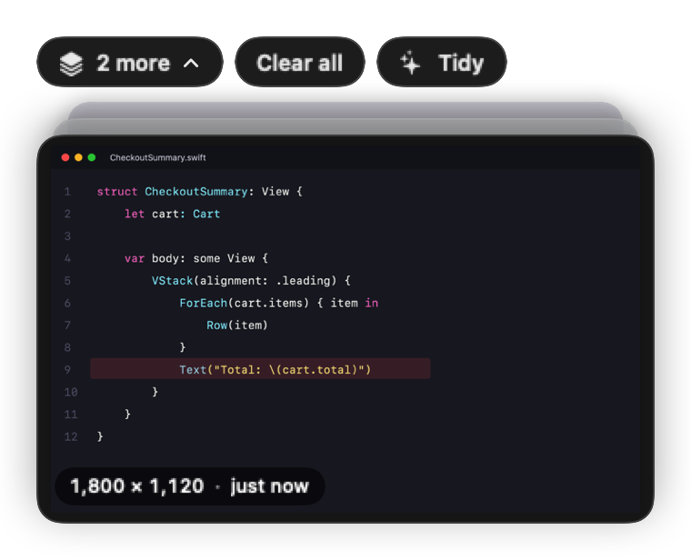
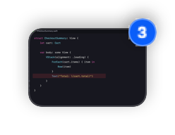
Click a screenshot to box the important bit, point at it, number the steps and say why. One more click puts it on a pretty background, ready for Slack or a pull request. Your edits stay editable, and copying always includes them.
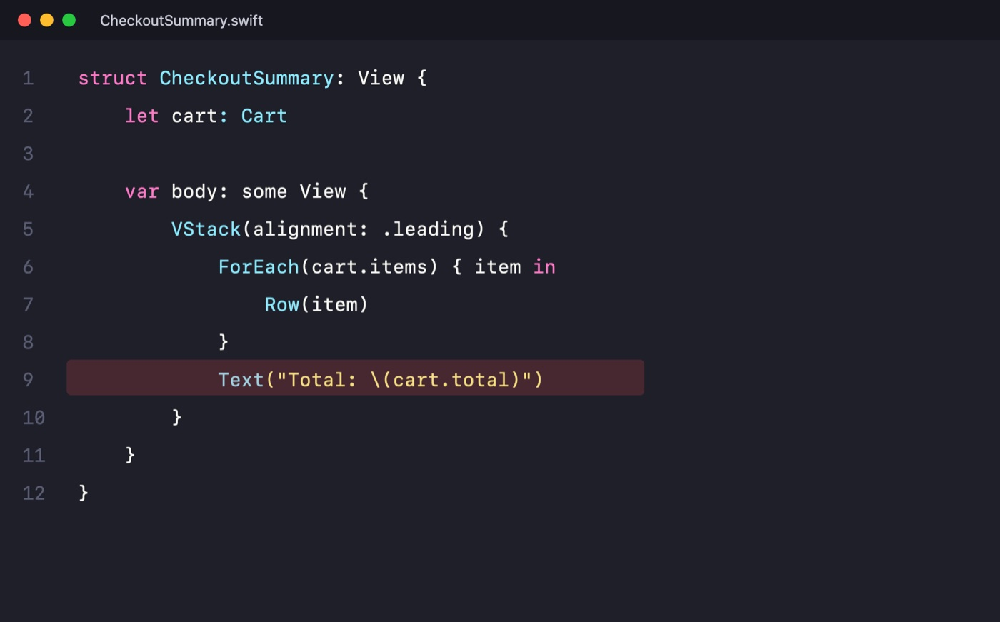
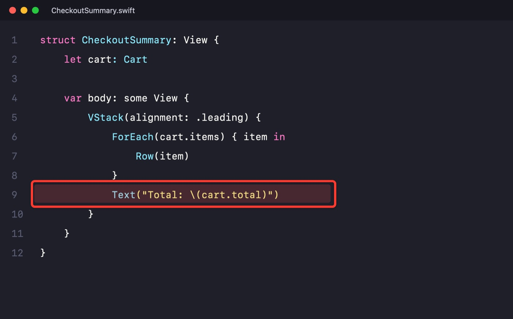
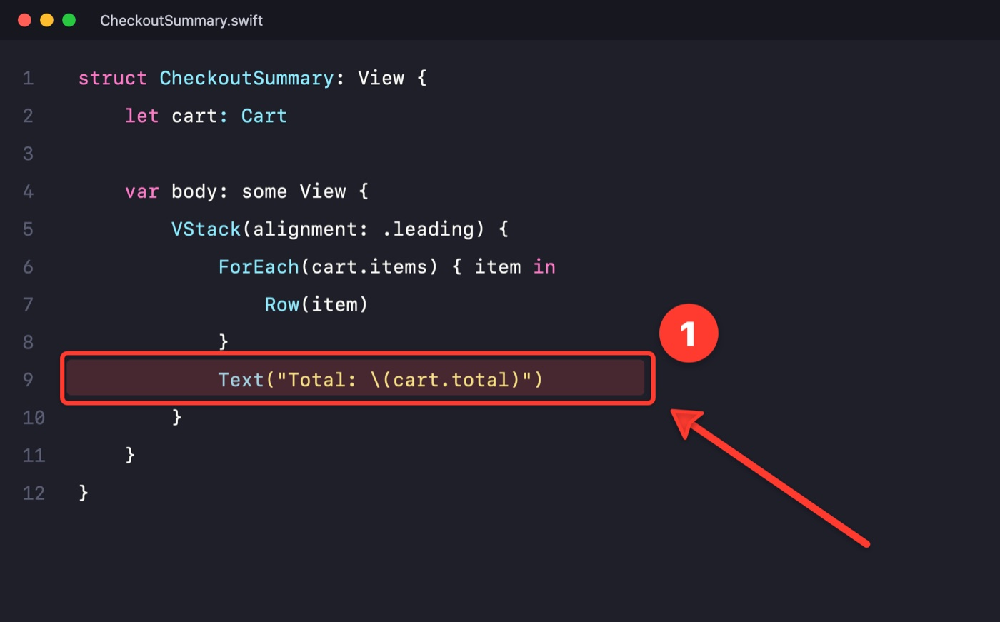
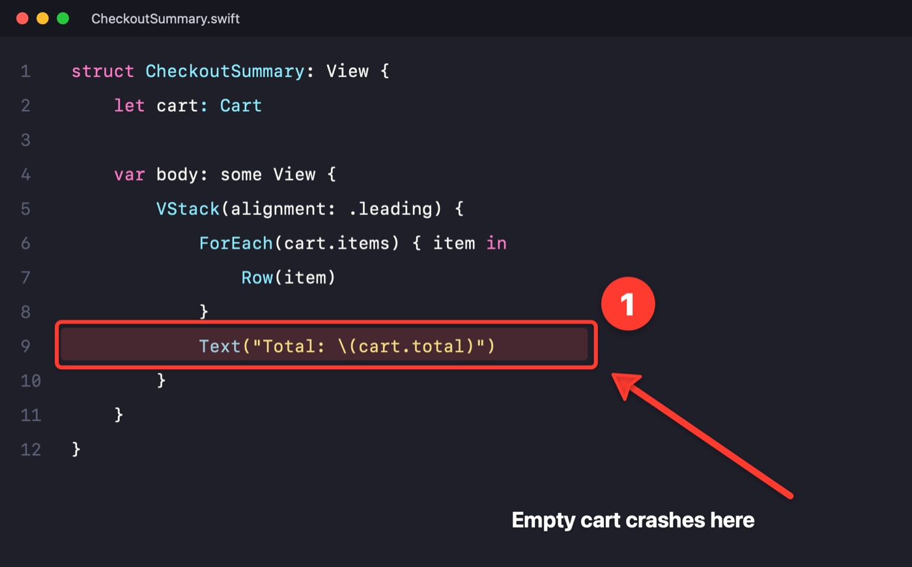
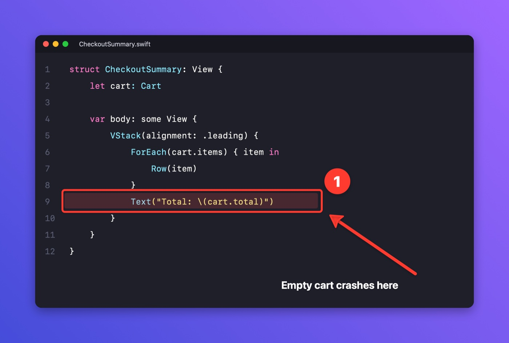
One click finds passwords, API keys, tokens, emails and card numbers in a screenshot and covers them with solid blocks. Handy when the thing you're showing someone has a .env file in the corner.
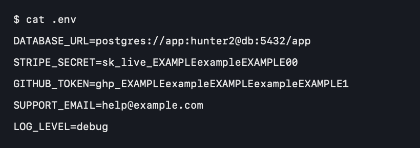
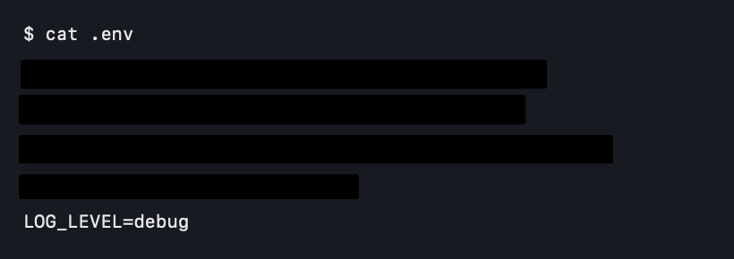
Press ⇧⌘7 and drag an area, click for the whole screen, or pick a window. A small bar keeps time. When you stop, the recording lands in the stack: trim it, or copy it as a looping GIF for Slack or GitHub. Turn on key caps and viewers see the shortcuts you press, never what you type.
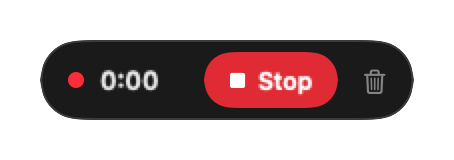
If you use Claude Code, Stackling can ask it to look at your loose screenshots and recordings and suggest a clear name and a folder for each, reusing folders you already have.
For a single shot, choose ✨ Name with Claude from its ⋯ menu. It uses your own Claude account and only reads your screenshots.
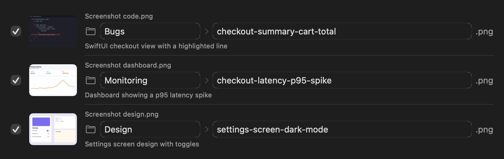
And also
The screen holds still while you pick an area, with a magnifier for exact pixels, so menus and hover states stay put.
Point at a card: ⌘C copies, Space opens, T grabs the text, Esc dismisses.
Drag the stack out of the corner when you need that bit of screen. It snaps back when you're done.
Grab the text from any screenshot, straight to your clipboard.
Float a screenshot above every window while you copy from one app into another.
Shots go into their own folder and tidy themselves into monthly archives after a week.
Get it
You only do this once. Stackling isn't in the App Store yet, so macOS asks you to confirm you trust it.
Private by design. Stackling works entirely on your Mac, with no account and nothing sent anywhere. The one exception is Tidy with Claude, which only runs when you ask and uses your own Claude Code. The code is all on GitHub if you'd like to check.